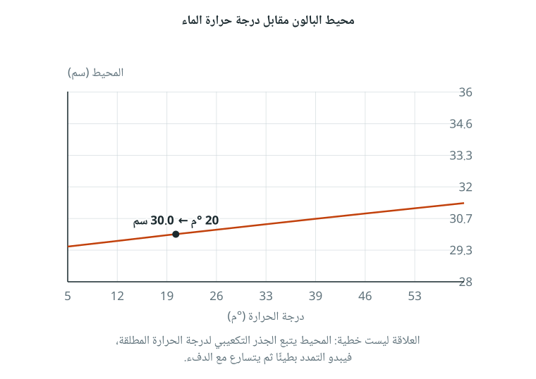

البالون في الماء الساخن: كيف يتمدّد الغاز؟
حرّك درجة حرارة الماء وشاهد محيط البالون. محاكاة تعليمية لا قياس فيزيائي حقيقي.
محاكاة تعليمية لا قياس فيزيائي حقيقي: الأرقام تُحسب من النموذج لحظيًا، ولا تُقاس بأدوات منزلية.
افتراضات النموذج والمصدر
V/T = ثابت (ضغط ثابت) ⇒ C = 2π·r₀·(T/T₀)^(1/3)
ضغط الغاز ثابت تقريبًا
الغاز مثالي
صلابة المطاط مهملة
Charles's law — volume and temperature at constant pressure — Wikipedia
انفخ بالونا قليلًا واقفل فوهته، وقِس محيطه بشريط قياس مرن. اغمره في ماء دافئ من الصنبور (لا مغلي) لدقيقة، ثم قِس محيطه ثانية. ما يحدث أن الغاز داخل البالون يُسخَّن فيزيد حجمه عند ضغط شبه ثابت، فيدفع المطاط للخارج.
النموذج المبسّط: الحجم يتناسب مع درجة الحرارة المطلقة (بكلفن)، ونصف القطر يتناسب مع الجذر التكعيبي للحجم، والمحيط يتناسب مع نصف القطر. لذلك مضاعفة درجة الحرارة المطلقة لا تضاعف المحيط بل تضربه في الجذر التكعيبي لـ2 (نحو 1.26).
حدّ النموذج صريح: مطاط البالون يضيف ضغطًا مرنًا يتغير مع نصف القطر، ودرجة حرارة الغاز ليست درجة حرارة الماء. فالمحاكاة تُظهر الاتجاه والمقدار التقريبي، لا قيمة قياس دقيقة.
كيف تعمل الظاهرة؟
تسخين الغاز يزيد متوسط طاقة حركة جزيئاته، فتزيد قوة اصطدامها بجدار المطاط الداخلي. الضغط يرتفع لحظيًا، فيتمدّ البالون حتى يتوازن الضغط الداخلي مع ضغط المطاط الخارجي وضغط الهواء المحيط.
العلاقة بالأرقام
المعادلة: V/T = ثابت (ضغط ثابت) ⇒ C = 2π·r₀·(T/T₀)^(1/3). عند درجة حرارة الماء 20.00 °م، يعطي الحساب: محيط البالون = 30.00 سم؛ درجة الحرارة المطلقة = 293.2 كلفن؛ نسبة الحجم إلى الأصل = 1.000 ×. حالة «غاز أبرد» (درجة حرارة الماء 5.00 °م): محيط البالون = 29.48 سم؛ درجة الحرارة المطلقة = 278.2 كلفن؛ نسبة الحجم إلى الأصل = 0.949 ×. حالة «غاز أدفأ» (درجة حرارة الماء 60.00 °م): محيط البالون = 31.31 سم؛ درجة الحرارة المطلقة = 333.2 كلفن؛ نسبة الحجم إلى الأصل = 1.136 ×. هذه أمثلة مولدة من دالة الحساب نفسها؛ وليست قياسات فعلية أو مواصفات لجهاز تجاري.
مفاهيم متقاربة
يُخلط بين «التمدد الحراري للغاز» و«تمدد المطاط نفسه»: المطاط يتمدد أيضًا بالحرارة، لكن نصيبه في التغير المرئي أقل من نصيب الغاز داخل البالون.
حدود التطبيق
النموذج يفترض ضغطًا ثابتًا وغازًا مثاليًا ومطاطًا مهمل الصلابة. عند النفخ الشديد يقترب المطاط من حدّه المرن فتقلّ استجابته، وعند التبريد الشديد ينكمش البالون بعلاقة غير خطية.

| الكمية | القيمة | المصدر |
|---|---|---|
| محيط البالون — الحالة الافتراضية | 30.00 سم | [1] |
| درجة الحرارة المطلقة — الحالة الافتراضية | 293.2 كلفن | [1] |
| نسبة الحجم إلى الأصل — الحالة الافتراضية | 1.000 × | [1] |
المصادر
- 1 Charles's law — volume and temperature at constant pressure — Wikipedia. en.wikipedia.org/wiki/Charles%27s_law · اطُّلع عليه 2026-11-19
- 2 Thermal expansion of gases — The Engineering ToolBox. www.engineeringtoolbox.com/thermal-expansion-air-d_384.html · اطُّلع عليه 2026-11-19
راجعه: عبدالله الهويدي — مراجعة في تطبيق انفراد · 2026-11-19 · آخر تحديث 2026-11-20
رجوع إلى المعمل